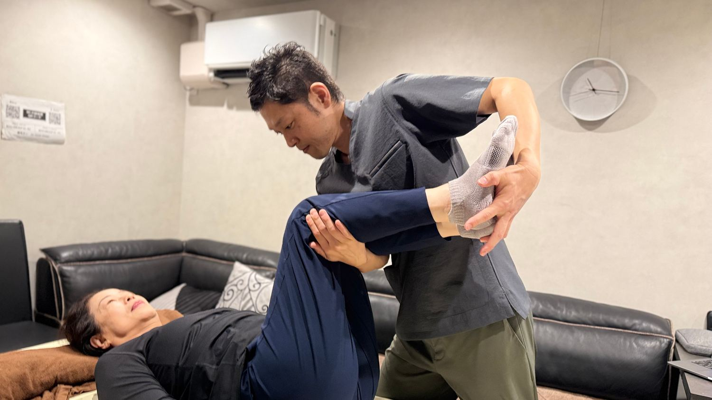
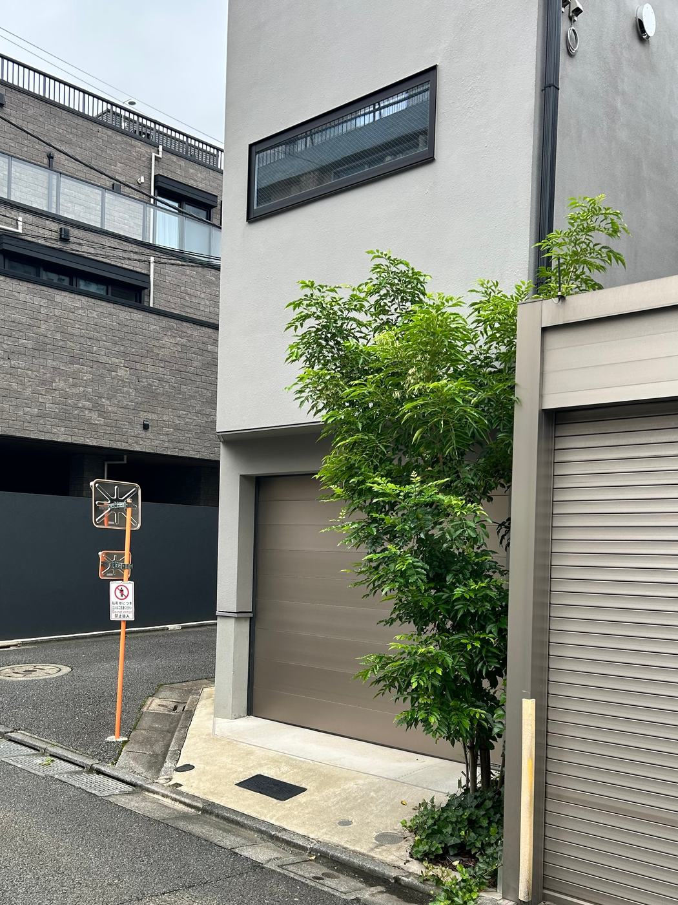
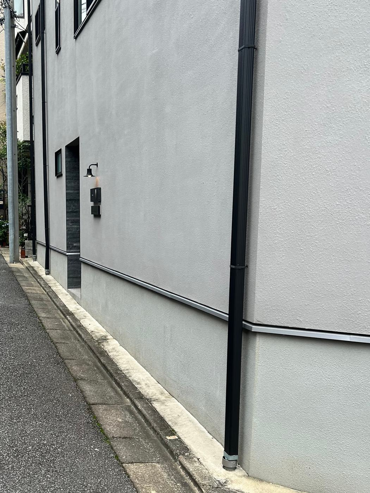
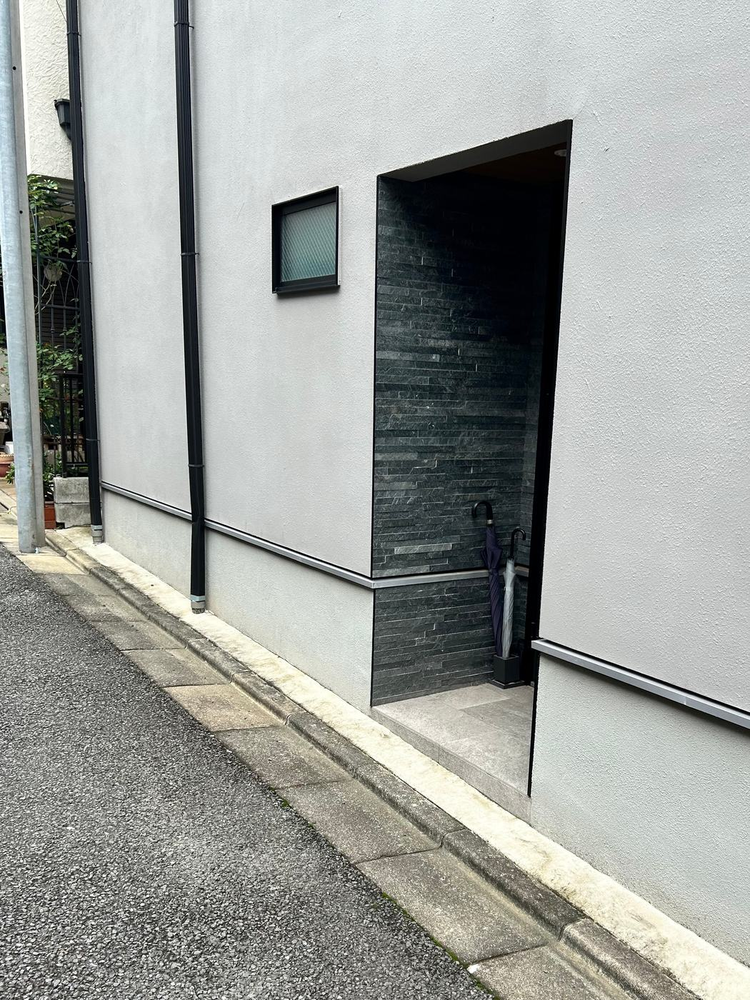
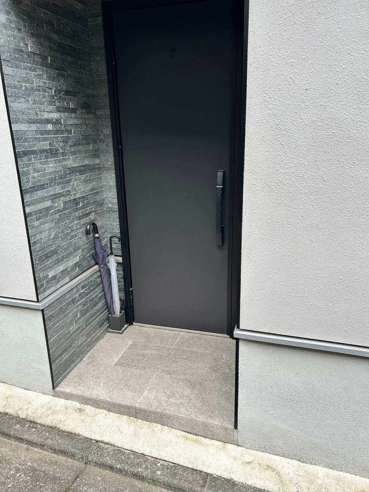
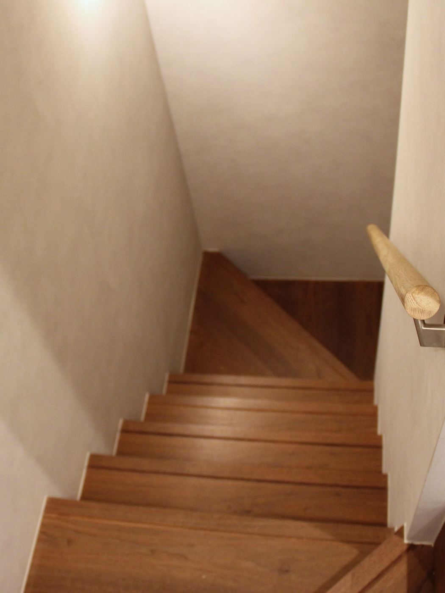

アクセス・ご予約

場所
東京都港区白金台
都営浅草線 高輪台駅より徒歩5分
東京メトロ南北線 白金台駅より徒歩7分
※詳しい住所はご予約確定後にお伝えします
営業日
木曜日／9:00〜17:00
完全予約制・日時はLINEで調整します
※ご予約は、おおむね1週間先からのご案内になります。
※月に1回程度、セミナー等でお休みをいただく場合があります。休業日は公式LINEでお知らせします。
建物について
一戸建ての地下1階です。
- 階段のみで、エレベーターはありません
- 車椅子でのご来店には対応できません
- 手すりがあります
- 待合スペースはありません
- ご家族・介助の方の同伴・同室が可能です
一戸建てのため、他の方と顔を合わせにくい造りです。完全マンツーマンの、静かな環境をご用意しています。
ご来店について
ご予約時刻の5分前を目安にお越しください。待合スペースがないため、それより早く到着された場合は、インターホンを押さずにLINEでご連絡ください。
初回のご来店
場所が少し分かりづらいため、到着されましたらLINEでお知らせください。
玄関の外までお迎えにあがります。
2回目以降のご来店
インターホンを押してください。道に迷われたときは、何度目であってもLINEでご連絡いただければお迎えにあがります。
ご来店の道順
初回はLINEでお知らせいただければ玄関の外までお迎えにあがりますが、 あらかじめ道順をご覧いただけるようにしておきます。
-
通りから
木が植わっている建物が目的地です。手前の路地に入ってください。

-
路地に入る
右手が建物の壁です。壁沿いにそのまま進みます。壁の照明の下にインターホンがあります。

-
入口
黒い石張りの、少し奥まったところが入口です。

-
この扉です
建物は住宅の一部をお借りしているため、玄関の表札は当スタジオの名前ではありません。この扉で合っています。

-
地下へ下りる
階段のみで、エレベーターはありません。手すりがあります。

ご利用が可能か確認したうえで、候補日時をご案内します。通常48時間以内にご返信します。
お電話でのご予約は承っておりません。